The goal of this article series is to overview a good chunk of the fundamentals.
Some, more granular, fundamentals are being skipped but we should be able to quickly go over important concepts.
If you wish to fill-in missing gaps or are overviewing the fundamentals for the first time, this is a good series for you.
Let's get into it...
Class
The very definition of a class is a data structure that uses primitives.
It is a data type.
Classes are data types and data types are classes.
The difference is that we can make our own data types.
Class comes from classification, or a classification of a memory container.
Thus we define how the data of a memory container is structured using class.
Classes can be placed inside of classes.
Data types can be placed inside of data types.
Because of this, the end result of going inside the deepest layers of data types inside data types, you find only primitives.
In the deepest class inside each class you will find all that remains is primitives.
Classes are all just abstractions of primitives moving in a certain fashion.
They are abstractions of abstractions.
In Java, let us take a look at the data type String as an example of how primitives are the deepest data structures in a data type..
String essentially look like this...
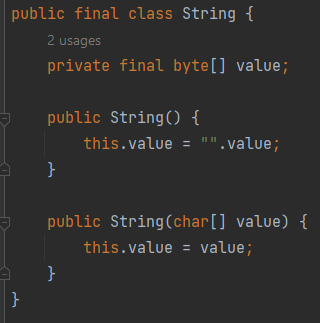Yea I gutted out all the functions and a few other primitives.
But at the end of the day it is just an array of bytes.
We can create classes like these ourselves, like this...

Also we can make classes within classes...
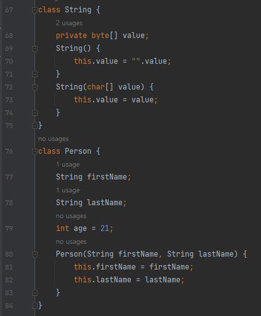Notice the String class is inside the Person class.
This can be done for all classes.
Constructors
In the coordinate and String classes, notice there is a code block that exists in both.
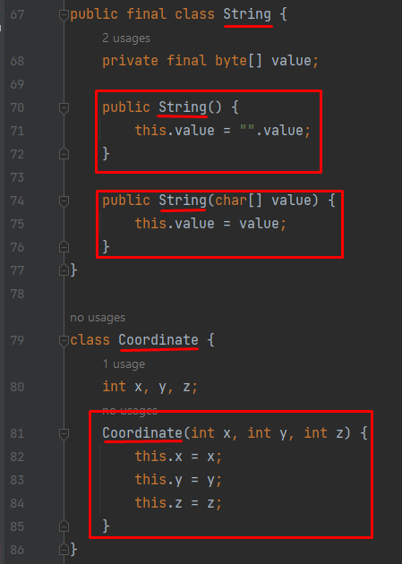The code block is named the same as the class.
This is a constructor.
It defines how to create a memory container, variable, data structure, based off of the class.
We can create the memory container and call it a variable.
Take a look...
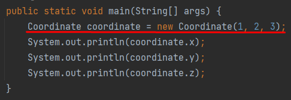We basically create a Coordinate memory container AKA class.
We use the new key word in Java to say, "make a memory container" and call it the coordinate variable.
1, 2, 3 are the x, y, z.
Every language creates constructors differently.
Take a look at Javascript...
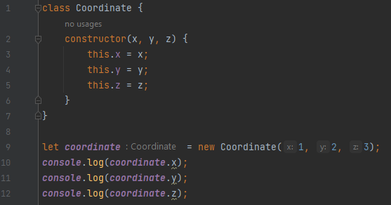 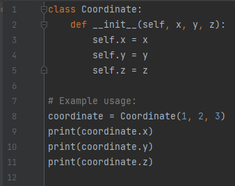In Javascript, constructors are straight up called constructor which is super interesting.
In Python it would look like this...
Notice the constructor here is "__init__".
Class Properties
Python is peculiar in the way it create constructors.
It doesn't even use the "new" keyword but simple uses the name of the class.
In the above examples you will see there is the "this" keyword in Java and Javascript. Or the "self" keyword in Python.
In addition you can see variables.
All variables and functions that are stored inside a class are known as properties.
Properties are the individual parts that make up a class.
In this String...
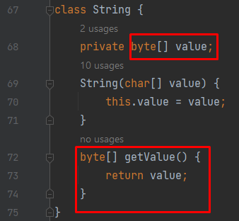The properties are the ones in a red square.
Properties are variables and functions inside a class so those fit the bill.
Here is another example...
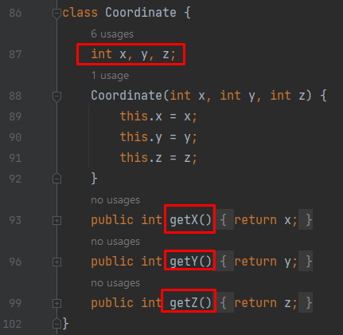And also, take a look at Python's...
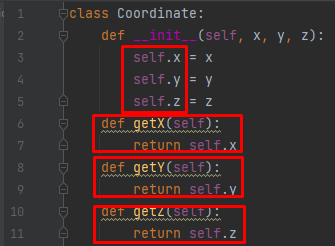 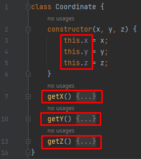The three functions and the three x, y, z are properties.
The same is true for Javascript...
Notice also, some languages don't even have you write out the properties completely, like in Java.
You can literally make this.x instead of defining it.
This is what I mean...
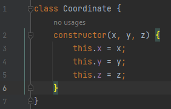 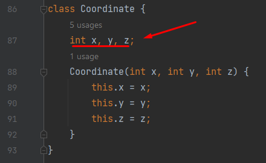Javascript
Java
"this" keyword
In the above examples you will also notice the this keyword.
This directly says we are talking about a property.
Sometimes it can be confusing when there are two x's, like in the coordinate class.
Notice...
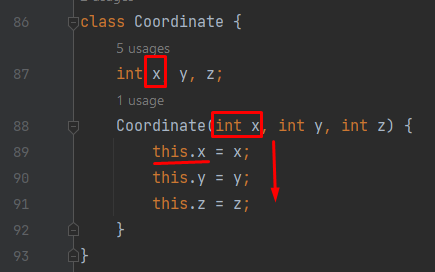There are two x's.
One from the constructor and one from the class property.
We directly say this.x from the properties is x from the constructor.
Algorithm
An algorithm is a repeatable series of steps which allow you to solve a problem.
Algorithms are the entire goal of computation.
It is for solving a problem.
An example of an algorithm is to print 15 seven times.
Here are two examples of algorithms for that:
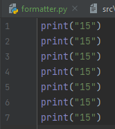 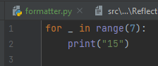Both solve the problem of print 15 seven times, but they do it entirely different.
Space complexity
How complex is a code source?
We measure it in memory size and how long the code takes from start to finish.
This measurement of memory is known as space complexity.
This measurement of time is, guess it, time complexity.
As strange as it sounds algorithms require memory.
Algorithms are simply a manipulation of memory.
It is impossible to create algorithms like the above without memory.
No matter what you do nothing can excuse an algorithm from taking memory.
But how much memory is it taking?
Typically for an application you can right click the project folder and click properties to view the size.
That is for applications.
But we are talking for algorithms here.
This is small pieces of code which solve small problems.
Perhaps the size of 20 lines or so.
How do we measure the size of 20 lines?
We do it with space complexity.
Big O for space complexity
This is an estimation of how complex a small portion of your code is.
We can measure the space complexity of smaller bits of code by counting the space data structures take.
So the idea is to take primitives and count how many there are inside a data structure.
Here is an example:
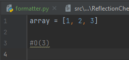 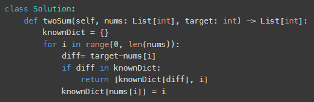This is big O of 3 or O(3).
So we say this code portion is Big O of 3,
When we want to think of big O we think O(N).
Or big O of N.
O stands for complexity and N stands for the number of primitives.
So when we say O(3) we are saying the complexity is 3 primitives throughout the program.
In addition time complexity is also big O.
Always when you see O(N) think about it as complexity of either time or space.
If you are presenting a small code snippet and want to describe its complexity you use big O.
Big O just means either time complexity or space complexity.
But you specifically have to tell the listener whether or not it is time complexity or space complexity because it could be either or.
The entire purpose of big O is to give you an intuitive sense of how complex your code is at runtime.
It is not meant to be used in every program you ever make. It is instead used for you to understand what type of space complexity you are taking.
This way you do not create 15n^99 complexity and run out of disk space without predicting it.
After taking the time to learn big O notation you should be able to understand how to create more efficient programs.
Time complexity
Time complexity is the measurement of time for a piece of code.
Typically we can do this for an application by starting a timer, then starting an application, then when the application ends we stop the timer.
We get the number of seconds the application took and we move on.
But with smaller code we cannot do this.
Often we would have to run small amounts of code 50+ times and get the average to truly compare between code sources.
We want a reliable and easy way to estimate how long code would take to run.
In addition we want to do this as we code it.
Is this possible?
How would we measure time without a timer?
Well the first thing is we count memory changes.
In space complexity we counted primitives in memory.
In time complexity we count the number of memory changes.
Take a look...
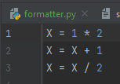Here we have 3 memory changes.
We assume multiplication, addition and division have the same unit of time per memory change.
Although this is not true, we just assume it.
Every memory change is an additional piece of time.
There is a difference between measuring in milliseconds and measuring memory changes.
Milliseconds measure the true time complexity.
Memory changes give us an estimation.
If we were to measure real time complexity in terms of milliseconds Python would take many times more milliseconds for every memory change than say C.
This is due to Python being written in C.
Most Python memory changes actually call many memory changes in C in order to make it simple for the developer.
But usually we are only measuring within one language as we write it so it is safe to assume as we write the code, all memory changes are approximately the same time.
But because we are measuring it in static memory change units and not milliseconds we can say it is O(N) with n being the number of memory changes.
Big O for time complexity
This is similar to space complexity in that we use big O to measure the complexity with some number N, like O(N).
But instead of measuring the number of primitives in the data structures of the code snippet, we are measuring the number of memory changes.
Every instance of memory change are considered a number.
So lets see an example:
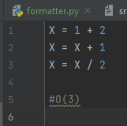We have 3 memory changes in 3 lines.
N is the number of memory changes and O stands for complexity.
So we say the complexity is of 3 memory changes or O(3) for short.
The entire purpose of learning big O for time complexity is to intuitively be able to measure the how long your code will take to run as you code it.
After practicing making big O notation for time and space complexity you should be able to create more efficient code by the intuitively measuring how much space and time a code takes relative to the rest of the language.
Anywho, I hope you learned something...
Happy coding!
Resources
Why fundamentals are important: Why Coding Fundamentals Are Important & Questions You Should Be Asking
What is Computer Science: A Short and Insightful Answer: What is Computer Science?